Focus timer for iPhone
集中した時間が、 街になる。
Nowtown は、
勉強や
集中した
Release 2026
12月1日 配信
App Store で予約受付中App Store で配信中
Nº 01 — TOKYO 東京完成まで、集中 7 時間
↓決めて、集中して、街になる。
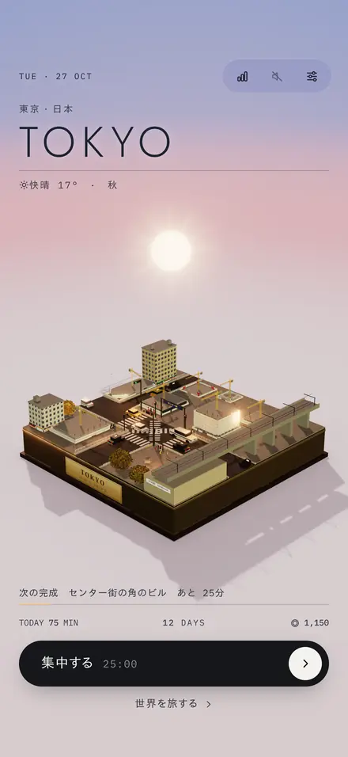
Step 1 · 06:30
時間を決めて、はじめる
集中する
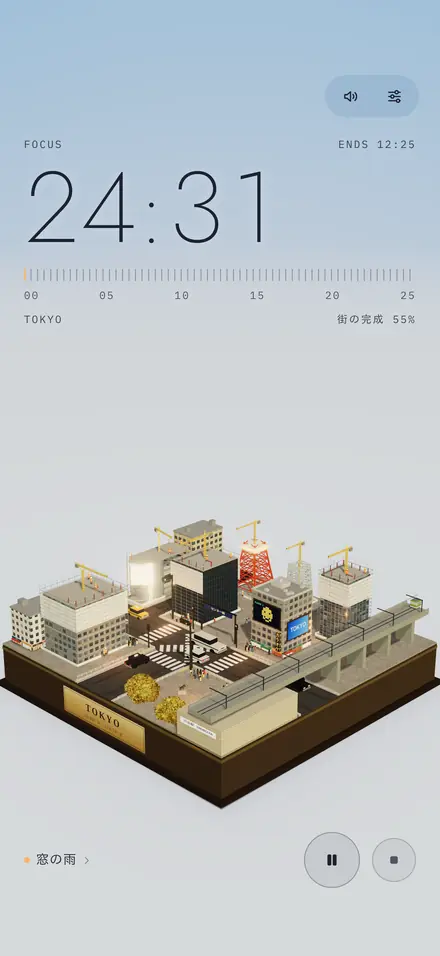
Step 2 · 12:00
集中しているあいだ、工事が進む
集中した
Step 3 · 14:30 · 小雨
東京が雨なら、箱庭にも雨。
箱庭には、
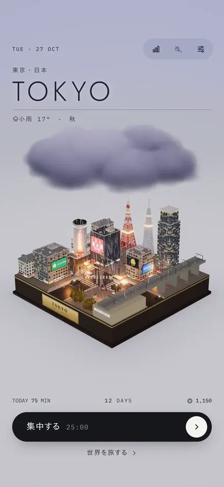
Step 4 · 16:40
7 時間の集中で、街が完成
1 日に 25 分を 1 回なら、
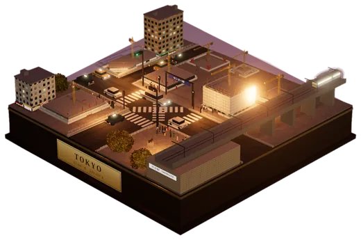
25 分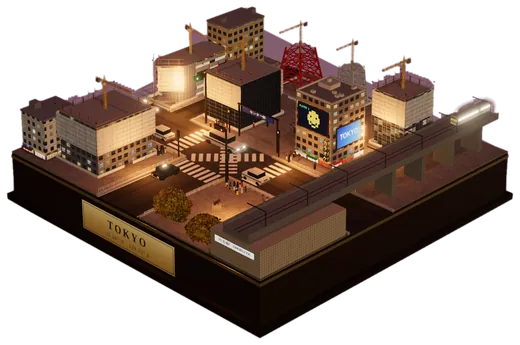
2 時間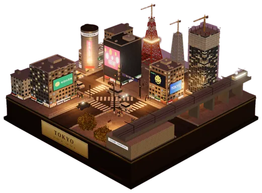
4 時間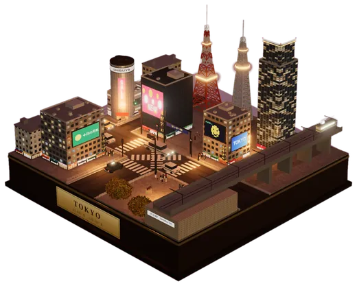
7 時間 完成
Tokyo 16:40 → 17:20
日が暮れるころ、 街に灯りがともる。
アプリでは、
毎日の集中に、ちょうどいい道具。
01 — Cities
東京から、世界の 7 都市へ
東京・
- Tokyo
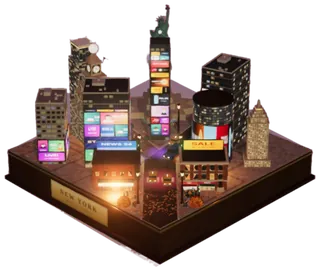
New York London
London- Paris
- Dubai
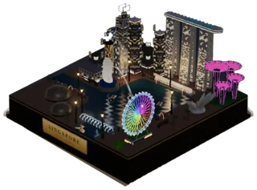
Singapore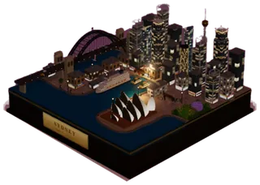
Sydney
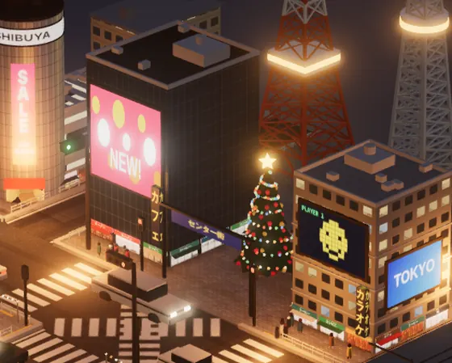
季節の行事
12 月の
02 — Sound
街の音と、集中の音
集中中は、
 しずかな雨
しずかな雨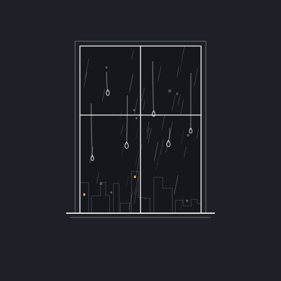
窓の雨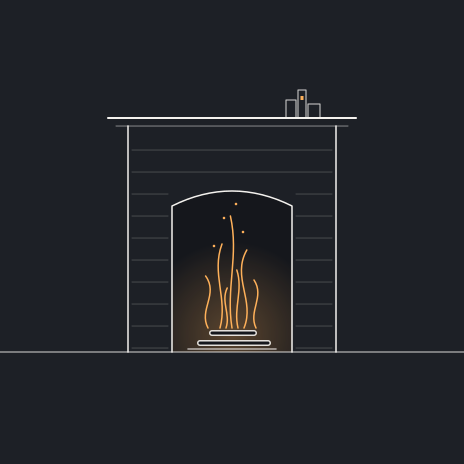
暖炉
ポモドーロにも
25 分でも、
03 — Record
試験までの日数と、勉強の記録
目標の
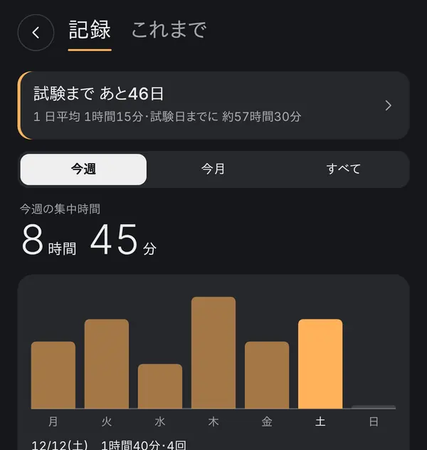
ホーム画面にも、あなたの街
小の
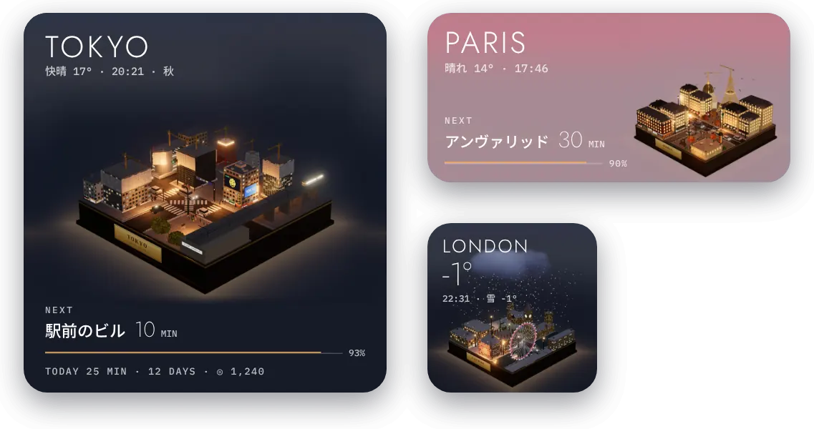
広告はありません。
集中の
ダウンロードは無料。
Free
無料
- 集中タイマー
（5〜120 分） - 街づくりと 7 都市
（コインで 開ける） - 現地の
天気と 時刻 - 街の
音・ 集中の 音 （バックグラウンド再生） - 基本の
記録・ 試験日の カウントダウン - 小の
ウィジェット・ ロック画面の 残り 時間 - 広告なし
Nowtown Resident
Nowtown Resident任意の有料プラン
- 月額
- ¥300
- 年額
- ¥2,400
- 買い切り
- ¥4,800
月額と
- ノイズの
音 （重ねがけ） - 中・
大の ウィジェット - 都市の
アプリアイコン - くわしい記録
- 置き時計モード
- 街の
写真と タイムラプス
- 広告なし集中の
画面に、 広告は 出ません。 - やめても、
建った 途中で分は 残る 終えても、 街は 減りません。 - 画面を
消しても タイマーは続く 終わりの 時刻から 数えています。 - 機種を
変えても 記録と戻る 街は、 あなたの iCloud に 保存されます。
よくある質問
街はどうやって育ちますか？
その
天気や時刻は本物ですか？
はい。
ほかの都市へ行くには？
集中して
機種を変えたら、記録や買ったものはどうなりますか？
集中の
サブスクリプションを解約するには？
端末の
ウィジェットやロック画面の残り時間が出ません
本アプリは iOS 18 以降で
アプリを閉じても音は続きますか？
集中している
Nowtown Resident とは？
有料の
画面を消しても集中は続きますか？
はい。
お問い合わせ
ご意見・
今日の 25 分から、街をひとつ。
2026年12月1日 配信・